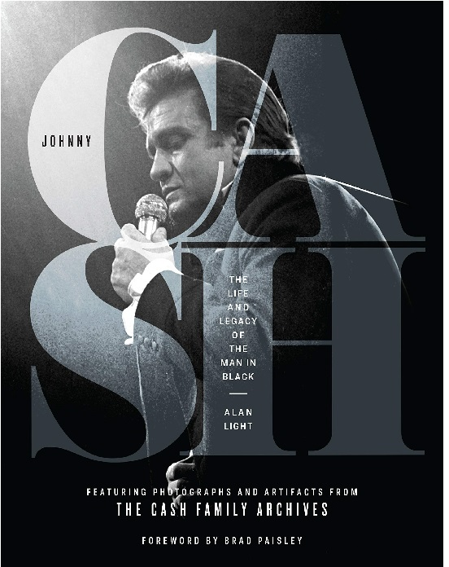

Johnny Cash: The Life And Legacy Of The Man In Black’ Available Now
Alan Light reveals Cash’s deep commitment to social justice, noting that the song ‘Man in Black’ and the black clothes Cash wore were a protest against the dire treatment of, in Cash’s words, “the ones who are held back.” – Publishers Weekly This book features never-before-seen personal photographs and memorabilia from the Cash family that paints an intimate portrait of the man in black. Johnny Cash: The Life and Legacy of the Man in Black is available now!
